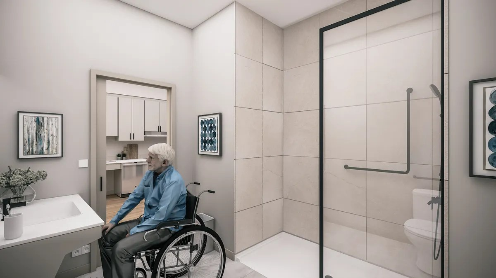

Logements et prix
Chaque logement du Château 632 est loué tout inclus — le chauffage, l'électricité et l'eau sont compris dans le loyer, et le déneigement et l'entretien de la pelouse sont inclus. Tous les logements offrent des plafonds de 10 pieds, un aménagement à aire ouverte, des électroménagers haut de gamme, une buanderie dans le logement et un balcon privé.
En un coup d'œil
| Type de logement | Chambres | Salles de bain | Loyer mensuel | Notes |
|---|---|---|---|---|
| Studio | Studio | — | Dans la fourchette de 1 300 $ – 4 000 $ | Communiquez avec l'équipe de location pour le prix actuel des studios |
| 1 chambre + coin détente | 1 + coin détente | 1 | À partir de 2 495 $ | 700 à 1 100 pi² selon les inscriptions; exemples au rez-de-chaussée à 2 525 $ |
| 2 chambres | 2 | 2 | 2 995 $ | Logements 103, 203, 207, 303 et 307 |
Les loyers sont ceux publiés dans les dépliants du projet et les inscriptions MLS® (vérifiés en octobre 2026) et peuvent changer — l'équipe de location confirme le loyer de votre logement précis. Les détails propres à chaque logement (superficie exacte, étage, nombre de salles de bain pour les studios) sont confirmés par l'équipe de location.
Dans chaque logement
- Plafonds de 10 pieds et aménagement moderne à aire ouverte
- Électroménagers haut de gamme inclus : réfrigérateur, cuisinière, lave-vaisselle, micro-ondes, hotte
- Buanderie dans le logement — laveuse et sécheuse incluses
- Votre propre balcon privé
- Loyer tout inclus : chauffage, électricité et eau compris
- Déneigement et entretien de la pelouse inclus
La vie sans obstacle

Stationnement et rangement
Des options de stationnement et de rangement sont disponibles au Château 632, et un stationnement extérieur pour vélos est sur place. Les prix sont sur demande — l'équipe de location vous présentera les options lors de votre visite.